Linking to user variables in the Algo Dashboard
You can use Excel links to populate an algo's user variables before launching the algo in the Algo Dashboard. When the algo is launched, the values in the orders pane for those user variables maintain their links and will update to match changes in your spreadsheet calculations.
Tip: If you paste links from Excel and save the workspace, the links will be preserved and then restored when you re-open the workspace.
To link Excel data to algo user variables in Algo Dashboard:
-
In the Algo Dashboard, select the desired algo to display its user variables.
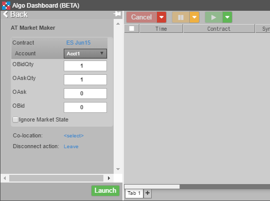
-
For each of the variables you want to link from Excel, repeat the following steps:
-
In the Excel spreadsheet, right-click on the cell containing the price you want to link to an algo variable and select Copy link to TT.
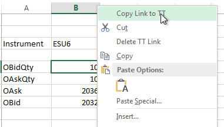
-
Right-click in the user variable corresponding to the value in the Excel spreadsheet, and select Paste Link From Excel.
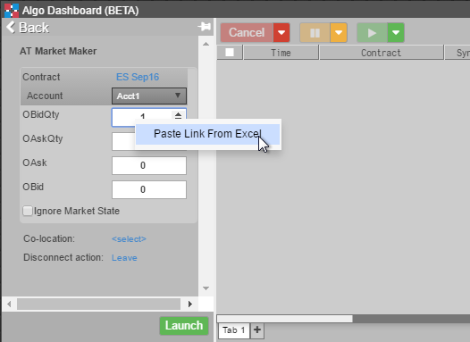
The value updates with the value in the Excel spreadsheet.
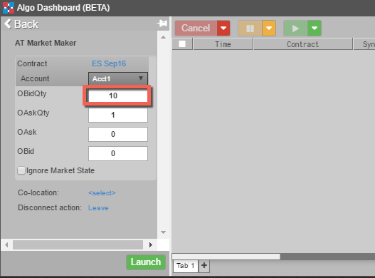
When you finish adding the links, all of the values are updated to match the spreadsheet values.
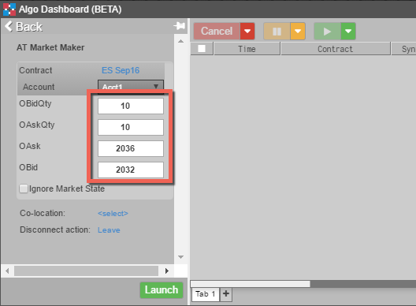
-
To verify the values linked correctly, change the values for the linked cells in the spreadsheet, the quantities in this case. The changes are immediately reflected in Algo Dashbard.
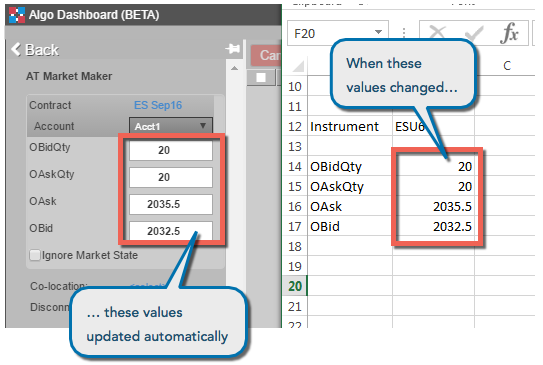
After you launch the algo, the linked user-variables maintain their links to the Excel spreadsheet and will automatically update if the values in the spreadsheet change.
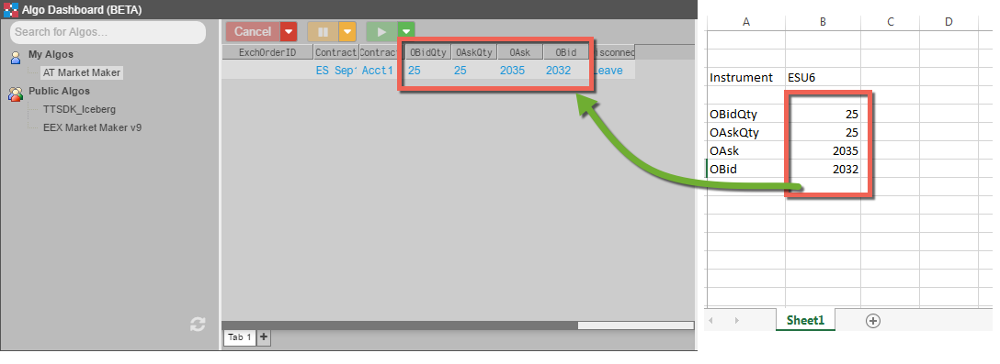
Linking to user variables in Autotrader
Autotrader allows you to link Excel spreadsheets into any editable, numeric cell corresponding to algo user variables. In this manner, you can seed Autotrader with values from your own Excel spreadsheets.
Tip: If you paste links from Excel and save the workspace, the links will be preserved and then restored when you re-open the workspace.
To link Excel data to algo user variables in Autotrader:
-
In Excel, select the desired range of cells; then right-click in the cell range and select Copy link to TT.
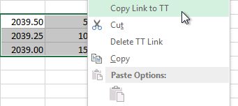
-
In the Autotrader widget, select the desired algo and click New to add the desired number of instances.
-
Select the user-defined variables to link. Ensure that the selected range matches the range of cells you selected in Excel.

-
Right-click in the range, and select Paste Link From Excel from the context menu.
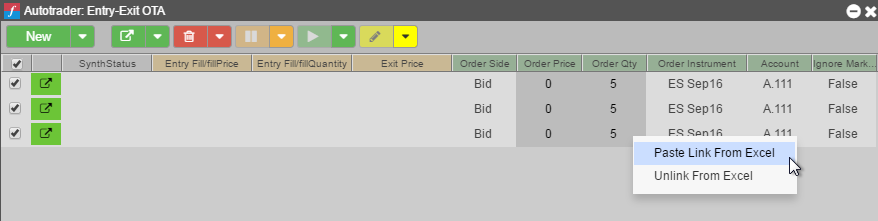
The values update to match those linked from Excel.
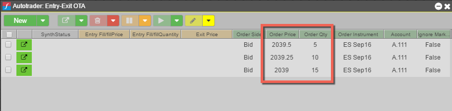
-
To verify the values linked correctly, change the values for the linked cells in the spreadsheet. In this case, the quantities were all incremented by 10. The changes are immediately reflected in Autotrader.
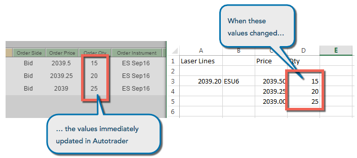